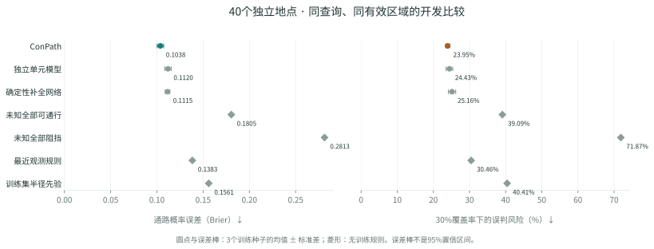

100个训练地点 / 25个选优地点 / 40个验证地点
把地点隔离，再检查模型效果。
三种模型各完成三个随机种子的从头训练；最多24轮、600次参数更新。验证包括515个自然查询、1545个尺寸条件事件，其中186个目标点为障碍。
通过了预设开发筛查，接下来验证单项模型改进。
同条件比较结果
小规模开发实验通路概率由实际二值世界的精确连通性投票得到；确定性方法只输出1张图。按父级地点平均，全部模型用同一查询及有效区域。下表不与旧队列或论文公开分数混排行。
| 方法 | 输出数 | 通路Brier ↓ | 30%覆盖误判 ↓ | 可通行类IoU ↑ |
|---|---|---|---|---|
| ConPath | 32 | 0.1038 ± 0.0035 | 23.95% | 0.6224 |
| 独立单元模型 | 32 | 0.1120 ± 0.0037 | 24.43% | 0.6212 |
| 确定性补全网络 | 1 | 0.1115 ± 0.0026 | 25.16% | 0.6623 |
| 未知全部可通行 | 1 | 0.1805 | 39.09% | 0.6318 |
| 未知全部阻挡 | 1 | 0.2813 | 71.87% | 0.0000 |
| 最近观测规则 | 1 | 0.1383 | 30.46% | 0.5871 |
| 训练集半径先验 | — | 0.1561 | 40.41% | — |
±为3个训练种子的标准差；IoU在未知有效区域内计算可通行类别，并对所有采样取平均。半径先验只拟合训练事件，没有地图输出。

本轮新检查点的真实效果
另新增10组独立地点案例，五个数据来源各2组；按编号固定选择，显示第1次采样，保留失败。与原模型诊断图片分开标明版本。
这些结果能说明什么
本轮修正了训练与验证共享父级地点的问题，并保留真实目标为障碍的自然负例。它仍是小预算开发验证：样本只有40个验证地点，不能保证训练已充分收敛，不能替代强外部基线或未参与开发的最终测试。后续改进使用本轮反馈时，这批验证地点也属于反复开发的数据。
物理尺度尚未独立核实，只报告格网尺寸；输入使用数据集提供的有效范围。